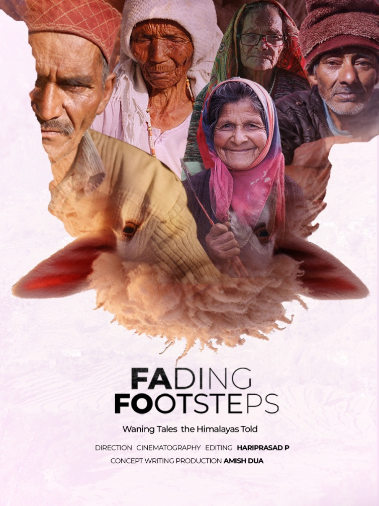

Fading Footsteps
An eight-month observational documentary capturing the culture, traditions, and daily lives of the Palsi shepherds in the Western Himalayas, Uttarakhand. The project showcases long-term immersive filmmaking in one of India's most challenging environments.
- Winner: Asian Talent Int. Film Festival, 6th Reels International Film Festival
- Official Selection: India, UK, Spain, Nepal, Denmark, France